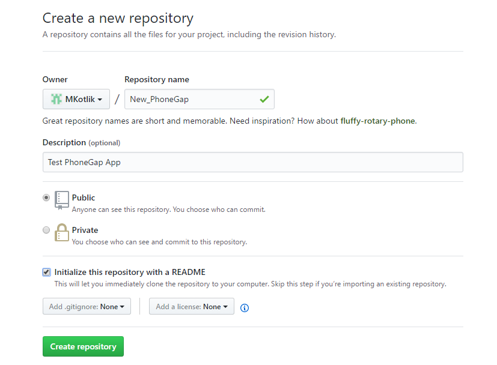
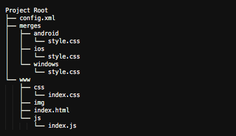
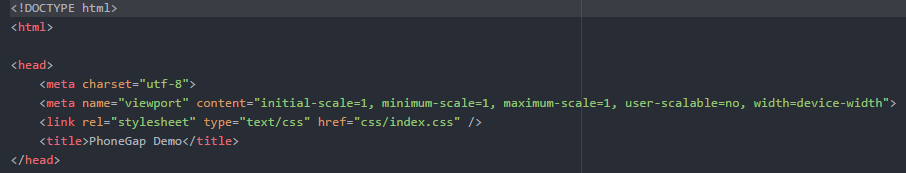
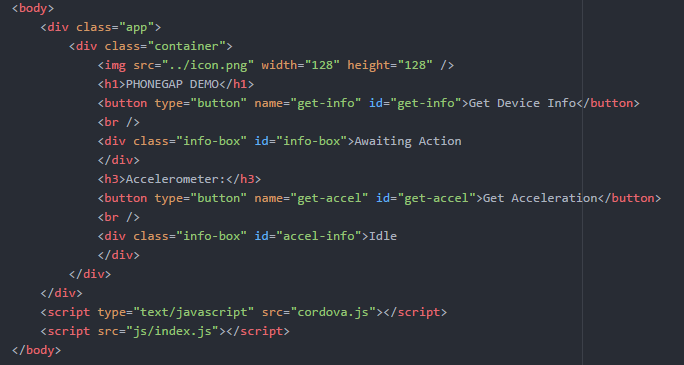
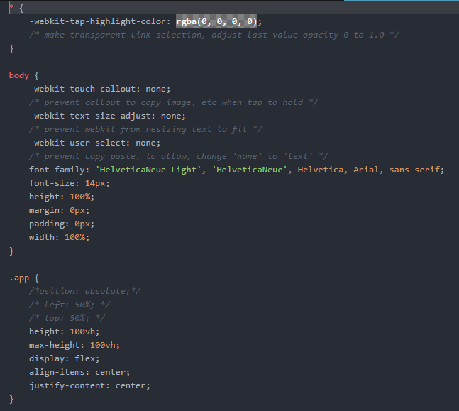
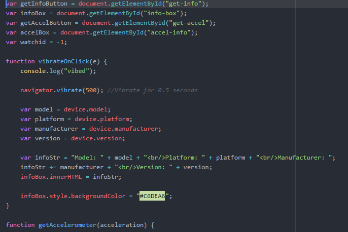

Let's walk through the basic development process for a PhoneGap app.
In order to make and test your app, you'll have to:
$ npm install -g phonegap@latest
$ phonegap
Make sure to make the GitHub repo public and initialized with a README.

Create a blank project in the GitHub repo with the follow CLI commmand:
$ phonegap create -n TestApp --template blank app
The basic structure of a PhoneGap project consists of a config.xml file (which contains the settings and properties of the app), a www folder, and often a merges folder. The www folder contains the core files of the app, and the merges folder contains platform specifc files that are meant to replace those in the www folder when needed. Though not shown in the diagram below, phonegap projects often also contain a plugins folder for the various PhoneGap plugins that can be used by an app.
Write the app's code in the same way you would create a regular web app, but optimized for mobile. Your code can be vanilla, or it can utilize popular frameworks like Bootstrap, React, or JQuery mobile. Plugin functionality can be incorporated in the app's Javascript files. Check each plugin's documentation for the specific API calls to use.
Below is some sample code from the demo PhoneGap app we created:    $ phonegap serve command to start the server and receive an IP address to enter in the mobile app.